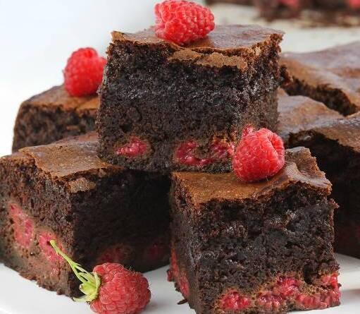

Brownie Recipe
time:
- preparation time: 30 min
- baking time: 50 min
ingredients for cake:
- dark chocolate: 3
- cocoa: 3 spoons
- butter: 200g
- eggs: 3 middle size
- flour: 190g
- milk: 250ml
- sugar: 200g
- baking soda: 1 teaspoon
- rum: 4 spoons
recipe for cake:
- We need to get eggs from fridge earlier and wait some time until they temp become normal.
- Its better to use high value choco, min 70%, raw cocoa and normal butter, not plant based. Insted of normal sugar we can use cane sugar.
- Now we have to melt butter and chocolate. To do so its better to cut butter and choco, and mix in pot on slow heat. Next, when we mix these two we can add milk, and again mix these ingredients. Do not boil this, it have to be cream.
- Next we make a foam / cream from eggs and sugar. With mixer we blend these two about 4-5 min.
- In other bowl we mix flour, cocoa and baking soda. After that add our foam and lighly mix with spoon. Now we can blend that mass, and after a while we add rum and choco cream.
- Now we need a form i use 11x30 cm, spread with butter, then i lined it with paper. We need to bake with top/down function with 170°C. After 50 min we need to check on cake and with slightly open door we wait another 5 min.
- I recommend to add some fruits, especially raspberries or strawberries.